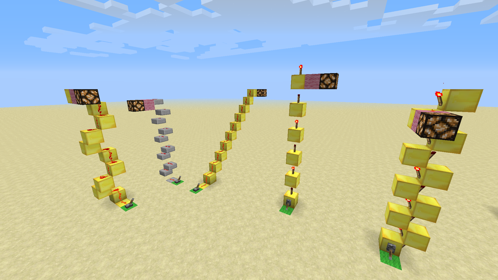
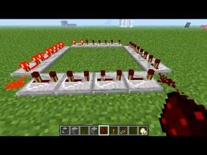

Inicio
Los circuitos Redstone son estructuras que se utilizan para activar o controlar mecanismos. Podemos diseñar circuitos para responder a los jugadores o para que se ejecuten automáticamente, ya sea que se ejecute cíclicamente o en respuesta a actividades ajenas al jugador (como el movimiento de criaturas, la caída de objetos), el crecimiento de cultivos, etc. Podemos utilizar estos circuitos para controlar el mecanismo desde el más simple (Como puertas automáticas o interruptores de luz) hasta las más complejas (Como puertas automáticas o interruptores de luz). Saber cómo construir y usar circuitos redstone y sus mecanismos de control aumentará enormemente las cosas que podemos hacer en Minecraft.
El contenido de los circuitos de redstone es mucho, por lo que este artículo solo nos brinda una descripción general de los diferentes tipos de circuitos que se pueden construir.
Antes de describir los circuitos de redstone, es necesario adquirir conocimientos básicos para comprenderlos.
Artículo principal:Componentes de redstone
Cada componente tiene una función en el circuito. Están relacionados entre sí. Sin una persona, otros no pueden trabajar. Los nombres de estos componentes son los siguientes:
- El componente de potencia suministra energía a la totalidad o parte del circuito.
- Los componentes de transmisión transfieren energía de una parte del circuito a otra.
- Los componentes mecánicos afectan el medio ambiente (producen movimiento, emiten luz, emiten sonido, etc.).
La mayoría de los módulos pueden estar alimentados (cargados) o no. Sin embargo, algunas piezas (como el vidrio) no se pueden alimentar. Otros, como los bloques de piedra roja, siempre se cargan. El bloque energizado o cargado puede transferir energía a la piedra roja adyacente.
El rango de potencia es de 0 a 15. La mayoría de los componentes de potencia proporcionan 15 vatios de potencia, pero algunos componentes de potencia proporcionan potencia variable según cómo están dispuestos. El cable o pólvora redstone transmite potencia al cable redstone adyacente, pero su potencia disminuye en 1 por cada bloque. Por lo tanto, puede cablear solo 15 bloques antes de que se necesite la potencia de retroalimentación.
Cuando cambia el circuito de redstone, también ocurren otros cambios en los bloques circundantes. Esto se denomina Actualización de Redstone (que no debe confundirse con Minecraft 1.5, llamada "Actualización de Redstone"). Cada uno de estos cambios puede volver a producir otros cambios en los bloques circundantes. La actualización seguirá las reglas del circuito Redstone en el bloque cargado. Los errores se encuentran al intentar enviar una señal a larga distancia. Esta es una fuente común de error. Cuando la señal llega a un bloque descargado, o, por el contrario, si la señal proviene de un bloque descargado, la señal se detiene. Nunca será descubierto.
La marca de redstone es el momento en que "Minecraft" actualiza el componente de redstone. Las actualizaciones de Redstone se producen 10 veces por segundo, por lo que la escala de Redstone se producirá cada 0,1 segundo. Las linternas redstone, los repetidores redstone y los componentes mecánicos requieren una o más escalas para cambiar su estado, por lo que estos componentes pueden obtener múltiples escalas a partir de señales que se propagan a través de circuitos complejos. La escala de redstone es diferente de la "escala del juego" (20 por segundo) y la "escala de bloque" (el cuadrado se actualiza cada vez que ocurre la escala del juego). Siempre que hablemos de circuitos redstone, a menos que se indique lo contrario, "tick" se referirá a tick redstone..
Si los circuitos tienen una salida estable, digamos que producen una señal que puede encenderse (generalmente ENCENDIDO) cuando está encendido, o apagarse (análogo al anterior, APAGADO) cuando no lo está. Definimos un pulso como una señal que cambia su estado de energía durante un período de tiempo y luego vuelve a su estado original. Los pulsos pueden ser del tipo OFF-ON-OFF, que llamamos pulso ON, o del tipo ON-OFF-ON, que llamamos pulso OFF. Los pulsos muy cortos (1 o 2 tics) pueden causar problemas con algunos componentes o circuitos, ya que es posible que no puedan mantenerse al día con una tasa de cambio de estado tan rápida. Por ejemplo, un émbolo pegajoso actúa como un émbolo normal cuando se somete a un pulso de 1 tic.
Diferencias entre circuitos y mecanismos
A veces, estos términos se usan indistintamente para describir estructuras con contenido de redstone, pero es útil hacer la siguiente distinción entre ellos:
• El circuito opera sobre la señal (generación, modificación, combinación, etc.).
• Un mecanismo puede cambiar el entorno (mover bloques, abrir puertas, cambiar los niveles de iluminación, hacer sonidos, etc.).
Un circuito plano se describe normalmente por el área de su planta (por ejemplo, 3x4 para un circuito con tres bloques de ancho por 4 de largo).
Un circuito que incorpora cambios importantes de altura, o que utiliza de forma completa las tres dimensiones dando vueltas sobre sí mismo, se describe por el volumen del solido rectangular (o paralelogramo) que ocupa, normalmente con la altura como último valor (por ejemplo, 3x4x5 para un circuito con tres bloques de ancho, 4 de largo y 5 de alto). Algunos usuarios de Minecraft no cuentan la capa más baja del circuito si solo tiene bloques para sostener los componentes de redstone (por ejemplo, los bloques bajo el cable de redstone). Otros, en cambio, creen que cualquier bloque que necesite el circuito debería contar para establecer el tamaño del circuito, y los bloques que no hacen nada excepto sostener los componentes de redstone siguen siendo necesarios, ya que si los quitas se rompe el circuito. Como dijimos antes, en la wiki se incluye esta capa en el tamaño.
Algunas propiedades de las estructuras son las siguientes:
• Ancho 1: una estructura tiene un ancho de 1 si al menos una de sus dimensiones horizontales tiene solo un bloque de ancho.
• Plano: Una estructura es plana cuando normalmente podemos extenderla en el suelo sin componentes encima de otros. Las estructuras planas suelen ser fáciles de entender y construir para principiantes, y se ven muy bien debajo del piso o sobre el techo.
• Alineado: una estructura está alineada cuando se puede ocultar detrás de una pared plana, piso o techo y el otro lado permanece utilizable. Los marcos alineados son construcciones deseables para expansores de pistón o puertas de pistón.
• Silencioso: una estructura está en silencio cuando no hace ningún ruido, p. Ej. B. el movimiento de un pistón o el gatillo del gotero y el dispensador. Se recomiendan estructuras silenciosas para trampas, un hogar silencioso o para reducir los retrasos en el sonido.
• "Apilable": cuando puede construir otra estructura similar junto a ella sin cambiar la estructura, la estructura es "apilable".
Otros objetivos de diseño podrían incluir, por ejemplo, reducir los retrasos en los subcircuitos al permitir circuitos más largos, reduciendo así el uso de recursos de componentes costosos (como redstone o cuarzo infrarrojo) y reordenar o rediseñar circuitos. Hágalo lo más pequeño posible.
Artículo principal: Circuitos de transmisión Aunque el número de formas de construir circuitos es infinito, algunos patrones de construcción se repiten una y otra vez. La siguiente sección intentará clasificar los circuitos más útiles. Algunos de estos circuitos se pueden usar para un control mecánico simple, pero a menudo es necesario combinarlos con otros circuitos más complejos para cumplir con los requisitos mecánicos. Circuitos de transmisión. Conocer algunos aspectos de las señales de transmisión puede ser de provecho. En esta sección veremos tipos de transmisión, transmisión vertical, repetidores, y diodos.} Tipo de transmisión. Haremos distinción entre señal digital y analógica. La señal digital se usa para estructuras de redstone simples, la transmisión solo necesita guardar el estado de la señal, o lo que es lo mismo, si está alimentado (ON) o no (OFF). La señal analógica se usa para estructuras más complejas. Para este tipo de señal es necesario transmitir la potencia del circuito y por lo tanto la transmisión debe ser codificada. transmisión vertical.

• Escalera de piedra roja: la forma más fácil de transmitir señales verticalmente es colocar el polvo de piedra roja en bloques en diagonal hacia arriba, o subir en línea recta en una espiral de 2 × 2 bloques. O cualquier otra variante similar. Las escaleras de Redstone pueden transmitir señales corriente arriba y corriente abajo, pero cada 15 bloques requieren mucho espacio y repetidores.
• Escalera compacta de piedra roja: como la piedra brillante, la mitad superior de los escalones y las escaleras invertidas pueden contener piedra roja pero no cortar el polvo de piedra roja. Las señales se pueden transmitir verticalmente (solo hacia arriba) alternando estos bloques en "escalones" de 2 × 1. Estas escaleras compactas de redstone ocupan menos espacio que las escaleras anteriores, pero también requieren repetidores cada 15 bloques.
• Torre de antorcha y escalera de antorcha: una antorcha de piedra roja puede alimentar un bloque por encima o polvo de piedra roja por debajo, de modo que una señal se pueda transmitir verticalmente hacia arriba, con el patrón mencionado primero, o hacia abajo con el segundo. Dado que el quemador necesita algo de tiempo para cambiar de estado, este tipo de transmisión de señal puede provocar un cierto retraso en la respuesta del circuito, pero no se requieren repetidores.
Descargar tabla logica: Tabla Logica
A veces es necesario verificar las señales de los demás y solo producir una señal de salida cuando la señal de entrada cumple con ciertos criterios. El circuito que realiza esta función se llama puerta lógica ("puerta", que permite que la señal pase solo cuando se satisface la función "lógica"). Tabla logica.
Puerta NOT. Una puerta NOT (también conocida como "inversor") está en on si su entrada está en off.
Puerta_OR. Una puerta OR solo está en on si cualquiera de sus entradas está en on.
Puerta_NOR. Una puerta NOR está en on solo si ninguna de sus entradas está en on.
Puerta_AND. Una puerta AND está en on solo si todas sus entradas están en on.
Puerta_NAND. Una puerta NAND está en on si cualquiera de sus entradas está en off.
Puerta_XOR. Una puerta XOR está en on si sus entradas son "diferentes" o el número de entradas on es impar.
Puerta_XNOR. Una puerta XNOR está en on si sus entradas son "iguales" o el número de entradas on es par.
Puerta_IMPLIES. Una puerta IMPLIES está en on a menos que la primera entrada esté en on y la segunda en off.
Artículo principal: Circuitos de pulsos Algunos circuitos necesitan un número de pulsos especifico, otros usan la duración de un pulso como vía para transmitir información. Los circuitos de pulsos cubren estas necesidades. Se conoce como un circuito monoestable a aquel que es estable en un estado salida e inestable en el otro. Muchos circuitos de pulsos son monoestables porque su estado OFF es estable, pero en cambio su estado en ON cambiará rápidamente (o eventualmente) a OFF. Generador de pulsos Un generador de pulsos produce un pulso de una duración específica. Limitador de pulsos Un limitador de pulsos reduce la duración de los pulsos que superen un umbral. Expansor de pulsos Un expansor o prolongador de pulsos aumenta la duración de los pulsos que estén por debajo un umbral. Multiplicador de pulsos Un multiplicador de pulsos da salida a múltiples pulsos para cada pulso de entrada (se multiplica el número de pulsos). Divisor de pulsos Un divisor de pulsos solo da salida a un pulso después de que se detecten un cierto número de pulsos en la entrada. Detector de cambio Un detector de cambio reacciona cuando la señal se invierte. El detector de cambio puede ser de "cambio creciente" (si detecta el cambio de OFF a ON), de "cambio en caída" (si detecta el cambio ON a OFF), o dual (cuando detecta cualquiera de los dos casos). Detector de duración de pulsos Un detector de duración de pulsos reacciona solo para pulsos que tengan cierto rango de duración (o incluso para pulsos con una duración específica)
Artículo principal: Circuitos reloj Un circuito secuencial (también conocido como circuito de reloj por su traducción de clock en inglés) es un generador de pulsos que produce un bucle de pulsos concreto. Algunos están diseñados para funcionar siempre, mientras que otros se pueden iniciar y parar. Un reloj simple con dos únicos estados de misma duración se identifica por la duración de su estado en ON (por ejemplo, un reloj que cambia entre un estado en ON de 5 tics y otro estado en OFF de 5 tics se denomina 5-clock). Otros relojes se identifican normalmente por su periodo (el tiempo que tarda en volver a su estado original); por ejemplo, un reloj que produzca un pulso de 1 tic cada 60 segundos se denomina reloj de un minuto (1-minute clock).
